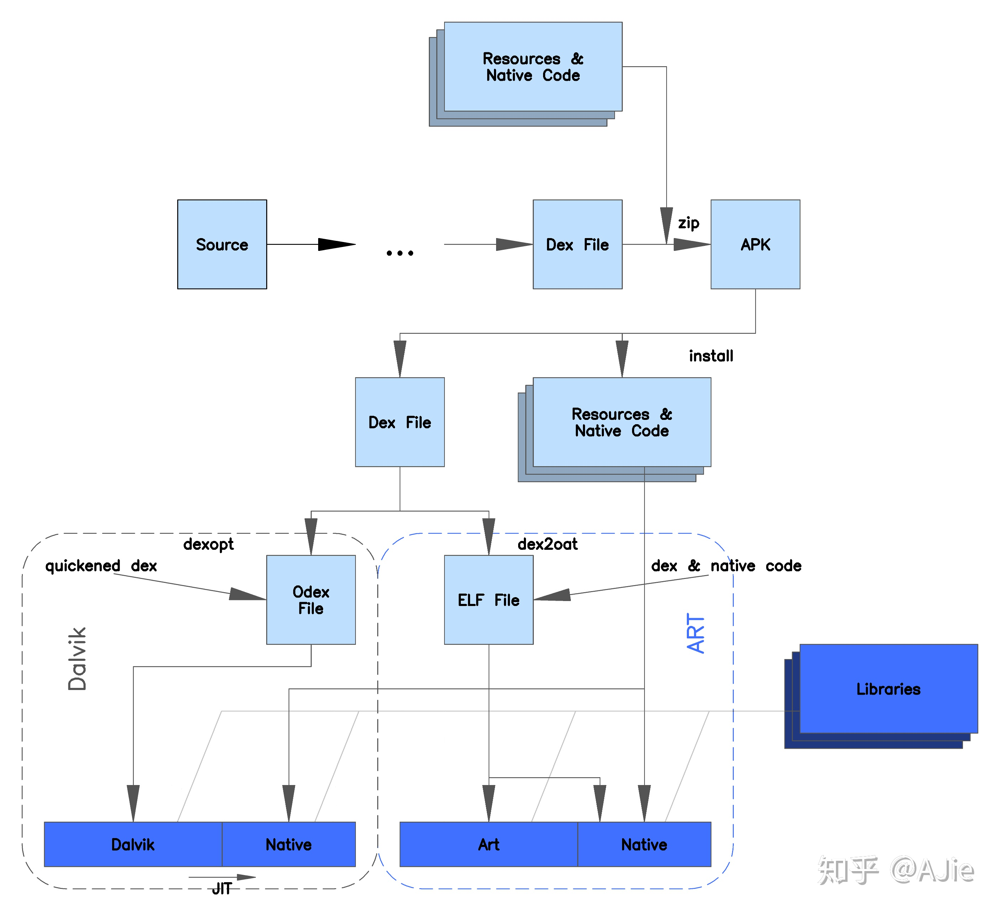

64K方法限制
64K原因
打包之后Java代码被编译成dex文件，通过short类型（2字节）引用dex文件中的方法，不能超过232，即64K方法。
不同的运行时
Android 5.0之前，使用Dalvik虚拟机，使用JIT(Just-in-time)方式运行，即在运行时才编译dex字节码，而且每个apk中只支持一个dex文件。
Android 5.0之后，使用ART虚拟机，ART原生支持加载多个文件，使用AOT(Ahead-of-time)方式运行，即在应用安装的时候，将所有的dex文件编译成一个.oat文件，因此安装的时候会比较慢。
Mutidex应用
minSdkVersion < 20的应用： 1. 使用support-mutidex插件，gradle开启multiDexEnabled选项； 2. 没有使用过自定义的Application: 自定义Application继承MutiDexApplication或者在自定义的Application中的attachBaseContext方法中安装MultiDex.
minSdkVersion > 20的应用：
ART原生支持多dex加载，无需额外配置。
局限性
- dex安装过程复杂，dex文件过大会ANR，应该尽量压缩和移除无用代码
- Dalvik linearAlloc 原因，在4.0之前的设备上可能无法运行
- Dalvik linearAlloc 可能会申请很大内存，在运行时可能会崩溃，4.0提高了分配限制，但仍然有可能出现。
保留某些类在主dex文件
应用启动过程中，某些类是必须要的，使用multiDexKeepFile使这些类保留在主dex文件中
主dex超过64K方法数
dex自动分包过程中策略很保守，主dex仍然有可能超过64K方法。 解决办法：自定义分包过程，maindexlist，比如用dexknife.
dex启动优化

开启multidex之后，对于5.0以下的系统，启动时dexopt过程会加载dex文件，会造成APP启动时在首屏耗时较多，进入主页时间慢。
-
微信方案：自定义分包，把4大组件和它们直接的依赖都放到一个dex里，放在asset目录下，加载之前判断是否进行过odex的过程，没进行过，放在attachBaseContext中加载，否则放在启动页的地球中用子线程加载。
-
Facebook方案：和微信类似，Facebook用buck构建，dex的形式和微信的一样（微信借鉴Facebook），不同的是，MultiDex.install放在了单独的nodex进程中。启动时如果进行过odex过程，则直接跳转主页，否则先在nodex进程中加载dex。
-
美团方案：美团是通过插件干涉dex分包过程，保证被首页直接依赖的类都在主dex中，先启动主dex，其他dex异步加载，当进首页之后，如果使用到了其他dex中的文件，则先跳出一个loadingActivity，等待类所在dex加载完成之后在跳转。
参考:
Android Developer 配置方法数超过 64K 的应用 亦枫-Android 突破 DEX 文件的 64K 方法数限制 Android Dex分包最全总结：含Facebook解决方案